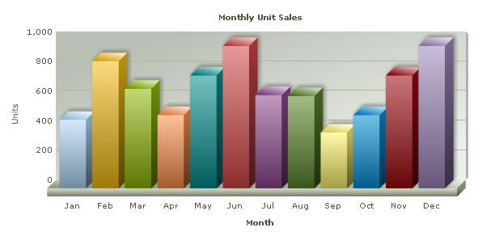
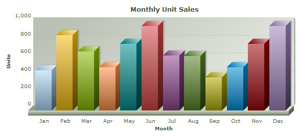
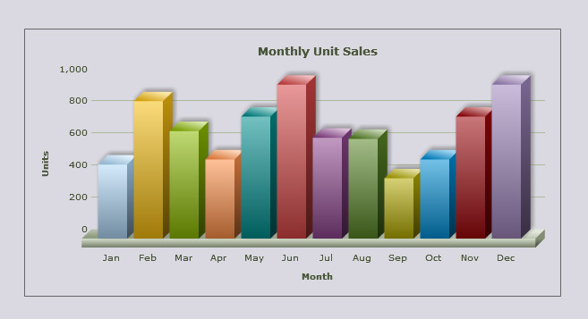

| Using FusionCharts XT with JSP - Basic Examples | ||||||||||||||||||||||||||||||||||||||||||||||||||||||||||||||||||||||||||||||||||||
|
FusionCharts XT can effectively be used with JSP to plot dynamic data-driven charts. In this example, we will show a few basic examples to help you get started. Even when used with JSP, FusionCharts XT internally uses JavaScript and XML/JSON to render the charts. The JSP code actually helps you output this JavaScript and XML/JSON. To aid your understanding of this section, we will recommend you to go through the following sections of documentation (if you have not already read them):
In this section, we will show a few basic examples to help you get started. We will cover the following examples here:
Let's quickly see each of them. Before you proceed with the contents in this page, we strictly recommend you to please go through the How FusionCharts XT works? section All code discussed here is present in Download Package > Code > J2EE > BasicExample folder. |
||||||||||||||||||||||||||||||||||||||||||||||||||||||||||||||||||||||||||||||||||||
| Setting up the charts for use | ||||||||||||||||||||||||||||||||||||||||||||||||||||||||||||||||||||||||||||||||||||
In our code, we have used the charts contained in Download Package > Code > FusionCharts folder. When you run your samples, you need to make sure that the SWF files are in proper location. All our JSP samples are now using custom tag library and JSTL! So, you will need the jstl jars to deploy and test these applications. The jstl jar files are provided in Download Package > Code > J2EE > Web-Inf > lib folder. Please go through the Readme file present in Download Package > Code > J2EE folder. |
||||||||||||||||||||||||||||||||||||||||||||||||||||||||||||||||||||||||||||||||||||
| Plotting a chart from data contained in Data.xml | ||||||||||||||||||||||||||||||||||||||||||||||||||||||||||||||||||||||||||||||||||||
|
Let's build our first example. In this example, we will create a "Monthly Unit Sales" chart using the Data URL method. For a start, we will manually code our XML data in a physical XML document Data.xml and then utilize it in our chart contained in a JSP Page (SimpleChart.jsp). Let's first have a look at the XML Data document: |
||||||||||||||||||||||||||||||||||||||||||||||||||||||||||||||||||||||||||||||||||||
<chart caption='Monthly Unit Sales'
xAxisName='Month' yAxisName='Units' showValues='0' formatNumberScale='0'
showBorder='1'>
<set label='Jan' value='462' />
<set label='Feb' value='857' />
<set label='Mar' value='671' />
<set label='Apr' value='494' />
<set label='May' value='761' />
<set label='Jun' value='960' />
<set label='Jul' value='629' />
<set label='Aug' value='622' />
<set label='Sep' value='376' />
<set label='Oct' value='494' />
<set label='Nov' value='761' />
<set label='Dec' value='960' />
</chart>
|
||||||||||||||||||||||||||||||||||||||||||||||||||||||||||||||||||||||||||||||||||||
|
This XML is stored as Data.xml in Data Folder under BasicExample folder. It basically contains the data to create a single series chart to show "Monthly Unit Sales". We will plot this on a Column 3D Chart. Let's see how to do that. To plot a Chart that consumes this data, you need to include the HTML code to embed a Flash object and then provide the requisite parameters. To make things simpler for you, we have created a tag library with all this functionality. So, whenever you need to work with FusionCharts XT in JSP, just include this tag library in your page, and then you can work with FusionCharts XT very easily. Let us see how to use the FusionCharts render tag. Let's see it in example. SimpleChart.jsp contains the following code to render the chart: |
||||||||||||||||||||||||||||||||||||||||||||||||||||||||||||||||||||||||||||||||||||
<%@ taglib prefix="c" uri="http://java.sun.com/jsp/jstl/core"%>
<%@ taglib prefix="c" uri="http://java.sun.com/jsp/jstl/core" %>
<%@ taglib uri="http://www.fusioncharts.com/jsp/core" prefix="fc" %>
<%@ taglib prefix="tags" tagdir="/WEB-INF/tags" %>
<jsp:useBean id="chartData" class="com.fusioncharts.sampledata.BasicRenderData"/>
<c:set var="folderPath" value="../../FusionCharts/"/>
<c:set var="title" value="FusionCharts - Simple Column 3D Chart" scope="request"/>
<c:set var="header1" value="FusionCharts - Examples" scope="request"/>
<c:set var="header2" value="Basic example using pre-built Data.xml" scope="request"/>
<c:set var="jsPath" value="${folderPath}" scope="request"/>
<c:set var="assetCSSPath" value="../assets/ui/css/" scope="request"/>
<c:set var="assetJSPath" value="../assets/ui/js/" scope="request"/>
<c:set var="assetImagePath" value="../assets/ui/images/" scope="request"/>
<%--
chartId="myFirst";
filename = "../../FusionCharts/Column3D.swf";
url="Data/Data.xml";
width="600";
height="300";
--%>
<%-- Create the chart - Column 3D Chart with data from Data/Data.xml --%>
<tags:template2>
<c:catch var="fcTagError">
<fc:render chartId="${chartData.chartId}" swfFilename="${folderPath}${chartData.swfFilename}"
width="${chartData.width}" height="${chartData.height}" debugMode="false"
registerWithJS="false" xmlUrl="${chartData.url}" />
</c:catch>
<c:if test="${not empty fcTagError}">
Tag Error: <br/>${fcTagError}
</c:if>
</tags:template2> |
||||||||||||||||||||||||||||||||||||||||||||||||||||||||||||||||||||||||||||||||||||
As you can see above, we have:
There are several parts of this jsp that need attention. In this jsp, we have used the following:
As you can see in this page, we have mostly used the <c:set> and <c:out> tags from JSTL core tag library. We highly recommend that you go through the JSTL documentation for more information on the JSTL tags that we have used in our samples as we will not discuss these tags here. | ||||||||||||||||||||||||||||||||||||||||||||||||||||||||||||||||||||||||||||||||||||
| FusionCharts Custom JSP Tag Library | ||||||||||||||||||||||||||||||||||||||||||||||||||||||||||||||||||||||||||||||||||||
|
The above page contains a custom tag render to help us render the chart. Here is the tag used to render the chart:
<fc:render chartId="${chartData.chartId}" swfFilename="${folderPath}${chartData.swfFilename}"
width="${chartData.width}" height="${chartData.height}" debugMode="false"
registerWithJS="false" xmlUrl="${chartData.url}" />
To this tag, you can provide the following attributes :
For providing data, we have used the xmlUrl attribute. You can use xmlData, jsonUrl, jsonData or chartData, chartDataUrl in combination with dataFormat or data as part of the body of the tag. Some of the more advanced configuration can be done using the following attributes:
In this SimpleChart.jsp, we have used the xmlUrl attribute to provide the data to the chart. There is another similar custom tag provided as part of FusionCharts Custom JSP Tag library, which is the renderHTML tag. We will discuss the renderHTML tag a little while later. | ||||||||||||||||||||||||||||||||||||||||||||||||||||||||||||||||||||||||||||||||||||
| Java Bean | ||||||||||||||||||||||||||||||||||||||||||||||||||||||||||||||||||||||||||||||||||||
|
In SimpleChart.jsp, we have used the BasicRenderData bean for providing the data. The relevant line of code being, <jsp:useBean id="chartData"class="com.fusioncharts.sampledata.BasicRenderData" /> The data required to render the chart is constructed in the bean com.fusioncharts.sampledata.BasicRenderData. This class contains the data like chartId, name of the SWF file, URL to the XML file, width and height of the chart. These properties of the bean are accessed in the jsp using the dot operator. For instance, the chartId is accessed as, ${chartData.chartId} Let us take a glance at the important part of code from BasicRenderData bean class: package com.fusioncharts.sampledata;
public class BasicRenderData {
protected String xml;
protected String chartId = "basicChart";
protected String URL = "Data/Data.xml";
protected String jsonUrl = "Data/Data.json";
protected String width = "600";
protected String height = "300";
protected String swfFilename = ChartType.COLUMN3D.getFileName();
protected String uniqueId = "";
public BasicRenderData() {
xml = "<chart caption='Monthly Unit Sales'
xAxisName='Month' yAxisName='Units' showValues='0'
formatNumberScale='0' showBorder='1'>";
xml += "<set label='Jan' value='462' />";
xml += "<set label='Feb' value='857' />";
xml += "<set label='Mar' value='671' />";
xml += "<set label='Apr' value='494' />";
xml += "<set label='May' value='761' />";
xml += "<set label='Jun' value='960' />";
xml += "<set label='Jul' value='629' />";
xml += "<set label='Aug' value='622' />";
xml += "<set label='Sep' value='376' />";
xml += "<set label='Oct' value='494' />";
xml += "<set label='Nov' value='761' />";
xml += "<set label='Dec' value='960' />";
xml += "</chart>";
}
// getters and setters
}
| ||||||||||||||||||||||||||||||||||||||||||||||||||||||||||||||||||||||||||||||||||||
| JSP Tag files | ||||||||||||||||||||||||||||||||||||||||||||||||||||||||||||||||||||||||||||||||||||
|
A tag file is simply a plain text file with a file extension of .tag. Other than the JSP page directive, all the usual JSP elements can be used within a tag file. Tag files can be used for templating in JSP. We have used 3 tag files called template1.tag, template2.tag and template3.tag for our samples. These files are present in Download Package > Code > J2EE > WEB-INF > tags folder.
Below is the code for template1.tag: <%@ taglib prefix="c" uri="http://java.sun.com/jsp/jstl/core" %>
<!DOCTYPE HTML PUBLIC "-//W3C//DTD XHTML 1.0 Transitional//EN"
"http://www.w3.org/TR/xhtml1/DTD/xhtml1-transitional.dtd">
<HTML>
<head>
<meta http-equiv="Content-Type" content="text/html; charset=utf-8" />
<title><c:out value="${title}"/></title>
<link href="${assetCSSPath}style.css" rel="stylesheet" type="text/css" />
<script type="text/javascript" src="${assetJSPath}jquery.min.js"></script>
<script type="text/javascript" src="${assetJSPath}lib.js"></script>
<!--[if IE 6]>
<script type="text/javascript" src="${assetJSPath}DD_belatedPNG_0.0.8a-min.js"></script>
<script>
/* select the element name, css selector, background etc */
DD_belatedPNG.fix('img');
/* string argument can be any CSS selector */
</script>
<![endif]-->
<style type="text/css">
h2.headline {
font: normal 110%/137.5% "Trebuchet MS", Arial, Helvetica, sans-serif;
padding: 0;
margin: 25px 0 25px 0;
color: #7d7c8b;
text-align: center;
}
p.small {
font: normal 68.75%/150% Verdana, Geneva, sans-serif;
color: #919191;
padding: 0;
margin: 0 auto;
width: 664px;
text-align: center;
}
</style>
</head>
<BODY>
<div id="wrapper">
<div id="header">
<div class="back-to-home"><a href="../index.html">Back to home</a></div>
<div class="logo"><a class="imagelink" href="http://www.fusioncharts.com" target="_blank">
<img src="${assetImagePath}fusionchartsv3.2-logo.png" width="131"
height="75" alt="FusionCharts v3.2 logo" /></a></div>
<h1 class="brand-name">FusionCharts</h1>
<h1 class="logo-text"><c:out value="${header1}"/></h1>
</div>
<div class="content-area">
<div id="content-area-inner-main">
<h2 class="headline"><c:out value="${header2}"/></h2>
<div class="gen-chart-render">
<jsp:doBody var="bodycontent"/>
<c:out value="${bodycontent}" escapeXml="false"/>
</div>
<div class="clear"></div>
<p> </p>
<p class="small"> ${intro}
<!--<p class="small">This dashboard was created using FusionCharts XT, FusionWidgets XT
and FusionMaps v3 You are free to reproduce and distribute this dashboard in its original form,
without changing any content, whatsoever. <br />
© All Rights Reserved</p>
<p> </p>-->
</p>
<div class="underline-dull"></div>
</div>
</div>
<div id="footer">
<ul>
<li><a href="../index.html"><span>« Back to list of examples</span></a></li>
<li cl ass="pipe">|</li>
<li><a href="../NoChart.html"><span>Unable to see the chart above?</span></a></li>
</ul>
</div>
</div>
</BODY>
</HTML>
| ||||||||||||||||||||||||||||||||||||||||||||||||||||||||||||||||||||||||||||||||||||
|
In the above template.tag file, the part that is in bold is the one that changes from one jsp to another. The rest of the HTML code remains the same across all the pages, thus, achieving uniformity. The values for the variables ${title}, ${header1}, ${header2}, ${intro}, ${assetJSPath},${assetImagePath} are provided by the jsps that use this template. For example, in SimpleChart.jsp, the values for these variables are provided as shown: <c:set var="title" value="FusionCharts - Simple Column 3D Chart" scope="request"/>
<c:set var="header1" value="FusionCharts - Examples" scope="request"/>
<c:set var="header2" value="Basic example using pre-built Data.xml" scope="request"/>
<c:set var="jsPath" value="${folderPath}" scope="request"/>
<c:set var="assetCSSPath" value="../assets/ui/css/" scope="request"/>
<c:set var="assetJSPath" value="../assets/ui/js/" scope="request"/>
<c:set var="assetImagePath" value="../assets/ui/images/" scope="request"/>
Note that here we have included the path to the folder containing the javascript files, which is required when using the JavaScript embedding method. This is achieved through the code as below: <c:set var="folderPath" value="../../FusionCharts/"/> Here, FusionCharts is the name of the folder containing FusionCharts.js and other JavaScript files. We have used template2.tag as a template for SimpleChart.jsp. This template, includes the necessary JavaScript file as shown in the following code snippet: <SCRIPT LANGUAGE="Javascript" SRC="${jsPath}FusionCharts.js"></SCRIPT>
When you now run this page SimpleChart.jsp, you will see a chart like the one below. If you do not see a chart like the one below, please follow the steps listed in the Debugging your Charts > Basic Troubleshooting section of this documentation.  So, you just saw how simple it is to create a chart using JSP and FusionCharts XT. Let's now try and convert the above chart using the Data String method. |
||||||||||||||||||||||||||||||||||||||||||||||||||||||||||||||||||||||||||||||||||||
| Changing the above chart into a single page chart using Data String method | ||||||||||||||||||||||||||||||||||||||||||||||||||||||||||||||||||||||||||||||||||||
To convert this chart using the Data String method, we create another page dataXML.jsp in the same folder with following code: |
||||||||||||||||||||||||||||||||||||||||||||||||||||||||||||||||||||||||||||||||||||
<%@ taglib prefix="c" uri="http://java.sun.com/jsp/jstl/core" %>
<%@ taglib uri="http://www.fusioncharts.com/jsp/core" prefix="fc" %>
<%@ taglib prefix="tags" tagdir="/WEB-INF/tags" %>
<jsp:useBean id="chartData" class="com.fusioncharts.sampledata.BasicRenderData"/>
<c:set var="folderPath" value="../../FusionCharts/"/>
<c:set var="title" value="FusionCharts - Simple Column 3D Chart using dataStr method" scope="request"/>
<c:set var="header1" value="FusionCharts - Examples" scope="request"/>
<c:set var="header2" value="Basic example using dataStr method (with XML data hard-coded in
bean itself)" scope="request"/>
<c:set var="intro" value="If you view the source of this page, you will see that the XML data
is present in this same page (inside HTML code). We are not calling any
external XML files to serve XML data. dataStr method is
ideal when you've to plot small amounts of data."/>
<c:set var="jsPath" value="${folderPath}" scope="request"/>
<c:set var="assetCSSPath" value="../assets/ui/css/" scope="request"/>
<c:set var="assetJSPath" value="../assets/ui/js/" scope="request"/>
<c:set var="assetImagePath" value="../assets/ui/images/" scope="request"/>
<tags:template2>
<c:catch var="fcTagError">
<fc:render chartId="${chartData.chartId}" swfFilename="${folderPath}${chartData.swfFilename}"
width="${chartData.width}" height="${chartData.height}" debugMode="false" registerWithJS="false" dataFormat="xml" >
<chart caption='Monthly Unit Sales' xAxisName='Month' yAxisName='Units'
showValues='0' formatNumberScale='0' showBorder='1'>
<set label='Jan' value='462' />
<set label='Feb' value='857' />
<set label='Mar' value='671' />
<set label='Apr' value='494' />
<set label='May' value='761' />
<set label='Jun' value='960' />
<set label='Jul' value='629' />
<set label='Aug' value='622' />
<set label='Sep' value='376' />
<set label='Oct' value='494' />
<set label='Nov' value='761' />
<set label='Dec' value='960' />
</chart>
</fc:render>
</c:catch>
<c:if test="${not empty fcTagError}">
Tag Error! <br/>${fcTagError}
</c:if>
</tags:template2>
|
||||||||||||||||||||||||||||||||||||||||||||||||||||||||||||||||||||||||||||||||||||
|
As you can see above, we:
In this example, instead of using the xmlUrl attribute, we have provided the data as part of the body of the fc:render tag.When you see this chart, you will get the same results as shown above. |
||||||||||||||||||||||||||||||||||||||||||||||||||||||||||||||||||||||||||||||||||||
| Using FusionCharts HTML embedding method to render chart | ||||||||||||||||||||||||||||||||||||||||||||||||||||||||||||||||||||||||||||||||||||
You can also create charts using HTML embedding method. It creates HTML <object>/<embed> tags to render chart. Please note it does not require FusionCharts.js to render. Again, to make things simpler for you, we have provided fc:render HTML tag, so that you do not have to get your hands dirty with Flash and HTML. This tag embeds the chart using HTML. Let's now quickly put up a sample to show the use of this tag. We create another JSP page BasicChart.jsp to use this function to plot a chart from data contained in our previously created Data.xml file. It contains the following code: |
||||||||||||||||||||||||||||||||||||||||||||||||||||||||||||||||||||||||||||||||||||
<%@ taglib prefix="c" uri="http://java.sun.com/jsp/jstl/core"%>
<%@ taglib uri="http://www.fusioncharts.com/jsp/core" prefix="fc"%>
<%@ taglib prefix="tags" tagdir="/WEB-INF/tags"%>
<jsp:useBean id="chartData"
class="com.fusioncharts.sampledata.BasicRenderData" />
<c:set var="folderPath" value="../../FusionCharts/" />
<c:set var="title" value="FusionCharts - Simple Column 3D Chart"
scope="request" />
<c:set var="header1" value="FusionCharts - Examples" scope="request" />
<c:set var="header2" value="Basic example using pre-built Data.xml"
scope="request" />
<c:set var="assetCSSPath" value="../assets/ui/css/" scope="request"/>
<c:set var="assetJSPath" value="../assets/ui/js/" scope="request"/>
<c:set var="assetImagePath" value="../assets/ui/images/" scope="request"/>
<%--Create the chart - Column 3D Chart with data from Data/Data.xml --%>
<%--
chartId="myFirst";
xmlUrl="Data/Data.xml";
width="600";
height="300";
swfFilename = "../../FusionCharts/Column3D.swf";
--%>
<tags:template1>
<c:catch var="fcTagError">
<fc:renderHTML chartId="${chartData.chartId}"
swfFilename="${folderPath}${chartData.swfFilename}"
width="${chartData.width}" height="${chartData.height}"
debugMode="false" xmlUrl="${chartData.url}" />
</c:catch>
<c:if test="${not empty fcTagError}">
Tag Error! <br/>${fcTagError}
</c:if>
</tags:template1>
|
||||||||||||||||||||||||||||||||||||||||||||||||||||||||||||||||||||||||||||||||||||
|
As you can see above, we have:
Getting back to our discussion on the fc:renderHTML tag, the following are the attributes accepted by this tag:
Most of these attributes are similar to the attributes expected by fc:render tag. There are several ways in which the data can be provided to the chart. Here, we saw two ways one using xmlUrl attribute and the other using tag body. To get a complete list of attributes that can be used to provide data, please see the tag description page. The above example shows how you can load data using Data URL method. You can always use Data String method to pass XML as string using xmlData attribute of renderHTML tag. | ||||||||||||||||||||||||||||||||||||||||||||||||||||||||||||||||||||||||||||||||||||
| Creating pure JavaScript charts | ||||||||||||||||||||||||||||||||||||||||||||||||||||||||||||||||||||||||||||||||||||
|
FusionCharts XT allows you to create pure JavaScript-only charts that does not require Flash, hence enabling your chart in browsers where Flash is not supported like that of iPhone/iPad etc. This is achieve by setting the renderer attribute in fc:render tag as "javascript". The code snippet below shows how you can achieve this: <fc:render chartId="${chartData.chartId}" swfFilename="${folderPath}${chartData.swfFilename}"
width="${chartData.width}" height="${chartData.height}" debugMode="false"
registerWithJS="true" xmlUrl="${chartData.url}" renderer="javascript"/>
The above code will create pure-JavaScript FusionCharts as shown in the image below:  | ||||||||||||||||||||||||||||||||||||||||||||||||||||||||||||||||||||||||||||||||||||
| Using JSON data to create chart | ||||||||||||||||||||||||||||||||||||||||||||||||||||||||||||||||||||||||||||||||||||
|
You can provide the chart data in JSON format. You need to use the jsonUrl and jsonData attributes of the fc:render tag or provide the data as part of the body of the tag and also provide the dataFormat attribute. ("jsonurl" or "json") . The code snippets below illustrate how you can do these: Using jsonUrl : <fc:render chartId="${chartData.chartId}"
swfFilename="${folderPath}${chartData.swfFilename}"
width="${chartData.width}" height="${chartData.height}"
debugMode="false" registerWithJS="false"
jsonUrl="${chartData.jsonUrl}">
</fc:render>
Using jsonData: <fc:render chartId="${chartData.chartId}"
swfFilename="${folderPath}${chartData.swfFilename}"
width="${chartData.width}" height="${chartData.height}"
debugMode="false" registerWithJS="false" dataFormat="json">
{ "chart": { "caption" : "Monthly Unit Sales",
"xAxisName":"Month",
"yAxisName":"Units",
"showValues":"0",
"formatNumberScale":"0",
"showBorder":"1" },
"data": [
{"label":"Jan","value":"462"},
{"label":"Feb","value":"857"},
{"label":"Mar","value":"671"},
{"label":"Apr","value":"494"},
{"label":"May","value":"761"},
{"label":"Jun","value":"960"},
{"label":"Jul","value":"629"},
{"label":"Aug","value":"622"},
{"label":"Sep","value":"376"},
{"label":"Oct","value":"494"},
{"label":"Nov","value":"761"},
{"label":"Dec","value":"960"}
]
}
</fc:render>
FusionCharts XT needs JSON to be passed in a specific format. Please read the FusionCharts XT Data Formats > JSON section for more on this. Please note that JSON data format is not supported in the fc:render HTML tag. | ||||||||||||||||||||||||||||||||||||||||||||||||||||||||||||||||||||||||||||||||||||
| Creating multiple charts in a single page | ||||||||||||||||||||||||||||||||||||||||||||||||||||||||||||||||||||||||||||||||||||
Creating multiple charts in a page is as easy as creating a single chart. The code below shows how you can use renderChart tag and create as many charts as you wish. All you need to take care is that you should set unique chart ID to each chart as highlighted in bold below: <fc:render chartId="${chartData.chartId}" swfFilename="${folderPath}${chartData.swfFilename}"
width="${chartData.width}" height="${chartData.height}" debugMode="false"
registerWithJS="false" xmlUrl="${chartData.url}" /><BR><BR>
<%-- Now, create a Column2D Chart--%>
<fc:render chartId="${chartData.uniqueId}" swfFilename="${folderPath}${col2dChart}"
width="${chartData.width}" height="${chartData.height}" debugMode="false"
registerWithJS="false" xmlUrl="${chartData.url}" />
<BR>
<BR>
<%-- Now, create a Line2D Chart --%>
<fc:render chartId="${chartData.uniqueId}" swfFilename="${folderPath}${lineChart}"
width="${chartData.width}" height="${chartData.height}" debugMode="false"
registerWithJS="false" xmlUrl="${chartData.url}" />
As seen in the above code snippet, in order to place multiple charts in a page, we need to provide unique chartId values for each chart. If we are using the BasicRenderData bean class to render data using the charts, then the getUniqueId attribute of this bean is defined as follows: /**
* Returns a UniqueId
*
* @return the uniqueId
*/
public String getUniqueId() {
int randomNum = (int) Math.floor(Math.random() * 100);
uniqueId = "Chart" + "_" + randomNum;
return uniqueId;
}
This ensures that a unique ID is generated and returned for each chart. This is a very simple code for generating unique ids using random number generation. You can use more complex code for achieving better IDs. | ||||||||||||||||||||||||||||||||||||||||||||||||||||||||||||||||||||||||||||||||||||
| Creating transparent chart | ||||||||||||||||||||||||||||||||||||||||||||||||||||||||||||||||||||||||||||||||||||
|
You can create charts with transparent backgrounds. This makes the chart show to what lies below it in HTML. To do this you need to do follow these steps:
Below is a sample code with a chart having transparent background : <div style="padding:40px; background-color:#9d7fbd; border:1px solid #745C92; width: 600px;">
<c:catch var="fcTagError">
<fc:render chartId="${chartData.chartId}" swfFilename="${folderPath}${chartData.swfFilename}"
width="${chartData.width}" height="${chartData.height}" debugMode="false"
registerWithJS="false" windowMode="transparent">
<chart bgAlpha='0,0' canvasBgAlpha='0' caption='Monthly Unit Sales' xAxisName='Month'
yAxisName='Units' showValues='0' formatNumberScale='0' showBorder='1' >
<set label='Jan' value='462' />
<set label='Feb' value='857' />
<set label='Mar' value='671' />
</chart>
</fc:render>
</c:catch>
</div>
<c:if test="${not empty fcTagError}">
Tag Error: <br/>${fcTagError}
</c:if>
In the code above we have :
The chart will look as shown below. The purple color of the DIV below the chart is visible through the body of the transparent chart.  | ||||||||||||||||||||||||||||||||||||||||||||||||||||||||||||||||||||||||||||||||||||
| Setting managed printing for Mozilla browsers | ||||||||||||||||||||||||||||||||||||||||||||||||||||||||||||||||||||||||||||||||||||
|
FusionCharts XT provides for a better-print feature for all Mozilla, WebKit, and Gecko based browsers like Firefox, Safari, etc. To enable this feature in JSP all you need to do is use the tag as shown below once in your page(preferably at the beginning or the end). <fc:printManager enabled="true"></fc:printManager> This will enable the Print Manager to process print data from all the charts in a page and prepare the charts for better-quality printing. To read more on how Print Manager works, please go through this. Note: Print Manager works only in browsers that supports canvas object. | ||||||||||||||||||||||||||||||||||||||||||||||||||||||||||||||||||||||||||||||||||||
| Listening to Print Manager status using JavaScript | ||||||||||||||||||||||||||||||||||||||||||||||||||||||||||||||||||||||||||||||||||||
|
Print Manager takes a bit of time to prepare all charts present in a page for print. You can listen to Print Manager's Ready State event using FusionCharts JavaScript class. Once the charts are ready, which can be tracked by listening to an event raised by the Print Manager, you can use browser's File → Print menu, JavaScript's native window.print() function or Print Manager's advanced function - managedPrint(). The JavaScript code below shows how you can listen to the event and prepare for print: <html>
...
<body>
<script type="text/javascript"><!--
FusionCharts.addEventListener (
FusionChartsEvents.PrintReadyStateChange ,
function (identifier, parameter) {
if(parameter.ready){
alert("Chart is now ready for printing.");
document.getElementById('printButton').disabled = false;
}
});
// --></script>
<input type="button" onclick="FusionCharts.printManager.managedPrint()"
value="Managed Print" disabled="disabled" id="printButton" >
...
</body>
</html>
In the above code we have:
Now, if you try printing from File → Print menu or using a button or function that call the window.print() function. You can also click "Managed Print" button to print the chart. How Print Manager Works:
|